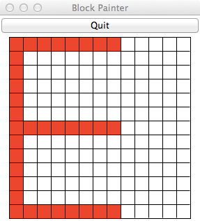
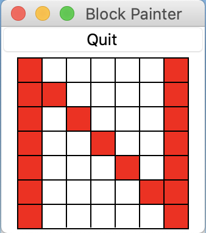
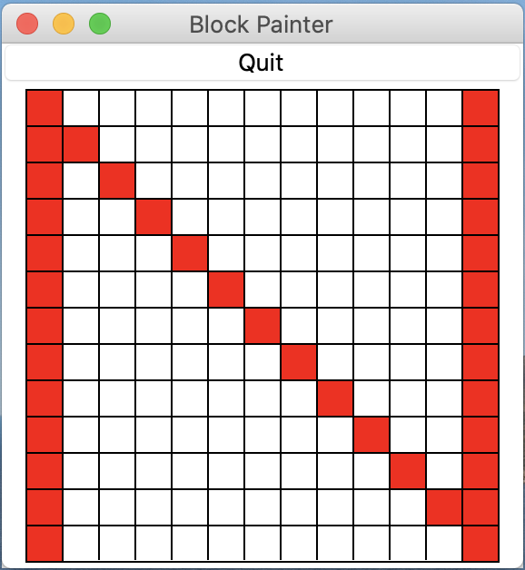
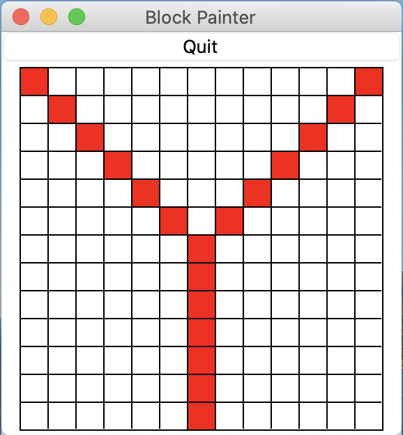
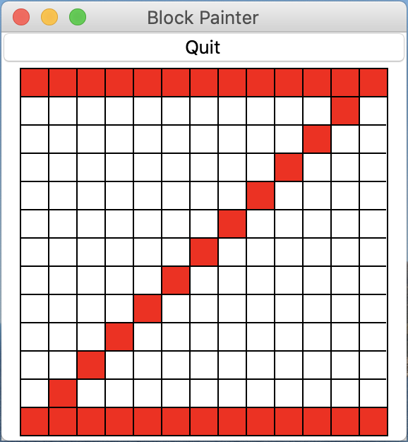

The due date for this homework is Thursday, February 25, 5:00pm.
This homework will improve your skills with for loops (with range) and if statements by having you develop programs that use loops and conditionals to repeat code patterns that are similar but not exactly the same. Specifically, this assignment is designed to give you practice with the following topics:
for loops over integers with rangeAs usual, we encourage you to start early.
There are two programs to complete as part of this homework: hw3_letters.py and hw3_email.py. Each of these is described below.
Download hw3.zip and unzip the compressed file to reveal the following files:
hw3_letters.py: this is where all the code you write for the Retro Font problem will goblock_paint.py: a Python module that you will use as part of this assignmenthw3_email.py: this is where all the code you write for the Email Address Validator problem will gohw3tester.py: a Python program for running tests on your hw3_email.pyhw3.pdf: this descriptionFor the first problem for this homework, you will use a Python module called block_paint and write code to implement four letters of a scalable retro font, like the ones used in 1980’s-era digital watches (and celebrated in minecraft). This module is included in the homework 4 zip file.
Your program should do the following:
Here are a couple examples to show the prompts that the test program (described below) expects, and to show invalid input. In the following example, an invalid scale is entered (>= 3, but not odd). Notice that because the scale is invalid the program does not ask for the letter to draw:
Enter scale: 8
8 is an invalid scale.In the following example, the scale is okay but the letter is not valid:
Enter scale: 3
Enter letter: q
I can't draw a qIf the scale and letter are both valid, your program should not print anything else (it should just draw the appropriate letter).
block_paint moduleWe have provided the block_paint module for drawing the retro font letters. To create a window for drawing a letter, you should call the new_grid function in the block_paint module. This function takes one parameter, which is the scale (width and height) of the window, in blocks, and returns a BlockPaint object that can be used for “painting” the blocks in a window. There are two useful methods available for this object:
paint(x, y, color). This method takes the coordinates and color of a block to be painted. Coordinates start at (0,0) at the lower-left of a window, and extend to (scale-1,scale-1) at the upper right. The color you specify can be a string like red', 'orange', 'blue', or 'green'. Other standard colors should work, too.
end(). Once you are done painting the blocks for a letter, you must call the end() method. Your program will “hang” and not work properly if you do not call this function.
A short example of using the block_paint module appears at the top of the hw3_letters.py template file, and is also shown below. Before attempting to write code to draw the letters, try to run the hw3_letters.py program. Your hw3_letters.py file must be located in the same folder (directory) as the block_paint.py file in order for your code to run correctly. This should “automatically” happen because of both files being contained inside the .zip file you downloaded for this homework, but please ensure that that is the case.
The example code that appears at the top of hw3_letters.py is designed to draw two parallel vertical lines on the edges of a grid, one blue and one red:
import block_paint
# set an arbitrary scale; you should ask the user for the scale
scale = 13
# make a new window to draw in
window = block_paint.new_grid(scale)
# draw two vertical lines
for i in range(scale):
window.paint(0, i, 'red')
window.paint(scale-1, i, 'blue')
# all done drawing
window.end()Guidelines and hints for drawing the letters are given below, as well as example images of the letters you will need to draw, at two different scales. Important detail: with each letter there is a constraint on the number of for loops you are allowed to use. For full credit, you must abide by these constraints.
E: The letter E should be anchored at the left side of the window, with the width of the letter extending to 2/3 the width of the window. For example, if the scale is 7, the width of the E should be 7*2/3=4. As another example, if the scale is 13, the width of the E should be 13*2/3=8. You should have no more than 2 for loops in your code to draw the E.
| Letter E at scale 7 | Letter E at scale 13 |
|
 |
N: The letter N should extend to the corners of the window. You should have no more than 1 for loop in your code to draw the N.
| Letter N at scale 7 | Letter N at scale 13 |
|  |  |
Y: The letter Y should extend to the corners of the window. The two angled “struts” at the top of the Y should start at the row above the middle row and extend to the top corners. You should have no more than 2 for loops in your code to draw the Y.
| Letter Y at scale 7 | Letter Y at scale 13 |
 |
 |
Z: The letter Z should extend to the corners of the window. You should have no more than 1 for loop in your code to draw the Z.
| Letter Z at scale 7 | Letter Z at scale 13 |
|  |
Lastly, note that if you attempt to draw in a location that is beyond the extent of the window, your program will crash. The crash message will include the line number of your code and the specific coordinate value that caused the problem. In the example trace below, an attempt was made to draw using X coordinate 14 (at line 52 in the program example_error.py), which was beyond the edge of the window:
Traceback (most recent call last):
File "example_error.py", line 52, in <module>
window.paint(i+1, size/2+i, 'red')
File "block_paint.py", line 64, in paint
raise InvalidXValue("X dimension {} is invalid".format(x))
block_paint.InvalidXValue: X dimension 14 is invalidValid internet email addresses must have a particular format, their sequences of characters must follow a specific pattern. Forms on the web often check if email addresses are valid. This exercise imitates such validation, but is a simplification of reality.
In the file hw3_email.py you will write a program that analyzes a string to determine the validity of an email address. Note that there are some restrictions on how you write the program to solve this problem, described below.
A valid email address consists of a local part, followed by '@', followed by a domain part. We define an email address to be valid if the string has the following three properties.
@ is present (zero @ or more than one @ is invalid).For example:
| String | Valid? | local | domain |
|---|---|---|---|
user@localserver |
Yes | user |
localserver |
example@colgate.edu |
Yes | example |
colgate.edu |
a@b.c |
Yes | a |
b.c |
special?!@.com |
Yes | special?! |
.com |
Abc.example.com |
No | ||
A@b@c@example.com |
No | ||
example@b |
No | ||
@host |
No | ||
a_user@a_domain |
No |
Your program should first ask the user to enter an email address and then should print a statement indicating whether the email address is valid or not.
If the email address is valid the program should also print the following information:
@),@),colgate.edu) you should print 'From COLGATE!'Think about how to break down the problem into manageable parts so as to implement and test one at the time. You should build your program incrementally.
You must use an accumulator pattern to solve this problem and create the local and domain strings. You may NOT use string methods (which have not been covered in class yet) and you may NOT use regular expressions (the re module) or other methods that have not been discussed in class.
Hint: you can import the string module in Python and check whether a given character is contained within pre-defined strings of all letters (string.ascii_letters) and numbers (string.digits). See the string module documentation for more information.
Here are several examples. Your program’s output should look exactly like the examples provided below (the hw3tester.py program looks for output matching the following).
Enter an email: user@localserver
Valid email
Local part: user
Domain part: localserverEnter an email: example@colgate.edu
Valid email
Local part: example
Domain part: colgate.edu
From COLGATE!Enter an email: a@b.c
Valid email
Local part: a
Domain part: b.cEnter an email: special?!@.com
Valid email
Local part: special?!
Domain part: .comEnter an email: Abc.example.com
Invalid emailEnter an email: A@b@c@example.com
Invalid emailEnter an email: @host
Invalid emailEnter an email: a_user@a_domain
Invalid emailThere are two separate files that can be used to test the two programs for this homework.
There are some tests embedded in the block_paint.py module itself that you can use to help verify the correctness of the block letters program (part 1). As with other tests provided for you, please note that the test program is NOT a complete test. You will still need to take responsibility for thoroughly testing your code before submitting.
There are tests in hw3tester.py for the hw3_email.py program. Again, please note that the tests in this file are NOT comprehensive. You will still need to take responsibility for thoroughly testing your code before submitting. However, our hope is that this test program will at least catch minor errors and make it easier for our grading process and more likely for you to receive full credit.
To run the tests in these files you’ll need to do the following:
Open block_paint.py in IDLE to run the tests for hw3_letters.py, or open hw3tester.py to run the tests for hw3_email.py. You’ll need to make sure that the tester files are in exactly the same folder as your program files.
In IDLE, select Run -> Run module
Read the test messages that are printed and revise your work accordingly. If the output of your program does not precisely match the expected output, a test will fail. Note that if your letter is not drawn exactly as specified, a text rendering of the correct letter and the letter your program drew will be shown (i.e., no separate window to show the drawing will be shown).
In the case of hw3_letters.py, in addition to running the tests provided, you should visually verify that the letters are drawn as required (comparing with the images above). You should also verify that you are abiding by the constraints on the number of for loops in your solution(s).
Please upload two Python files:
hw3_letters.pyhw3_email.pyPlease also remember to complete the questions at the top of the hw3_letters.py and hw3_email.py files.
Your assignment will be graded on two criteria:
for loops for the block letter program. [80%]The correctness part of your grade is broken down as follows:
| Category | Portion of grade |
|---|---|
Letters E, N, Y, and Z are drawn correctly (hw3_letters.py) using the specified number of for loops |
40% |
Email addresses are correctly classified as valid or invalid (hw3_email.py) |
40% |
Program design and style [20%]: style and program design become increasingly important the more complex your program becomes. For these programs, adhere to the following guidelines:
Variable names should be meaningful
Programs should contain at least a few descriptive comments. Do not comment every line of code with low level explanations of what each line does. Focus on high level ideas.
The if statements should be structured so that the logic is clear and easy to follow.
Create additional letters! You can decide how they should look in their blocky-ness. In particular, try A, K, X and any others you think will be interesting. Try to minimize the number of for loops in your solutions.